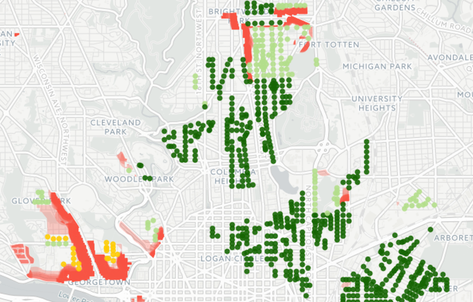
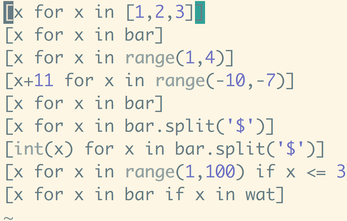
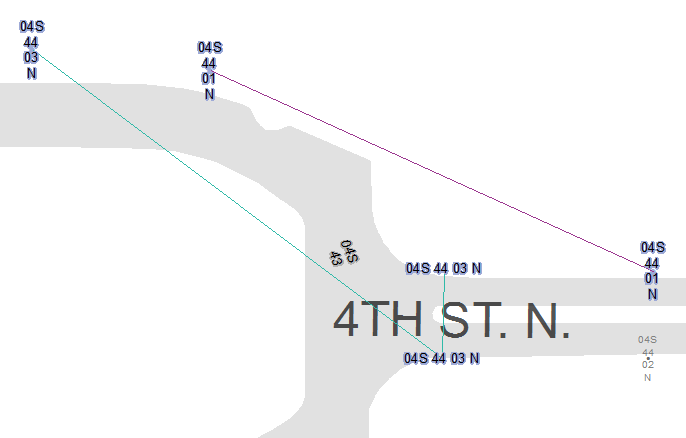

Corners for stores

I was inspired to make this map thanks to Greater Greater Washington's coverage of the 2016 DC zoning code. After reading about the possibility of corner stores in DC I had fond memories of the tiny grocery that was right around the corner from my home in Brooklyn. Even though I barely cook, I was amazed at the efficiency of that store. It seemed to have everything you needed and nothing else, including free space.
Read MoreEasy to Comprehend List Comprehension

This is the introduction to list comprehensions that I wish I had read when I first encountered them. There are other good introductions to list comprehensions, but I wrote this one based on a very simple concept: Every list comprehension evaluates to the list [1,2,3] This should make it easy to follow the examples as they go from very trivial to more complex.
Read MoreDupeLines.pyt

This ArcGIS python toolbox will draw lines between any number of features that have a duplicate field value. This works for any field in the feature class. I created it to resolve hundreds of duplicates in a data set with thousands of points spread over 28 square miles of urban streets. Working through those duplicates one by one in ArcGIS was slow and confusing. Few of the duplicates were in predictable locations and many were half way across the county from each other. After using DupeLines several coworkers and I could resolve the duplicates by just looking at each line and deciding which end was correct and how to fix the other end. The feature class of lines also worked nicely as a todo list.
Read More
DupeLines repo on GitHub